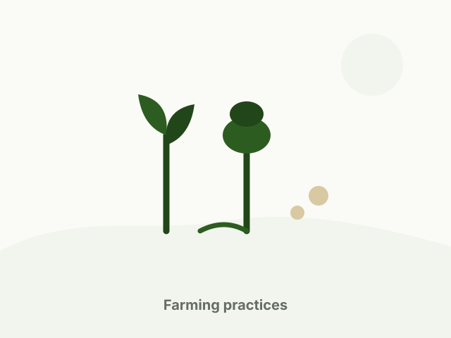

Farming practices
Habits that decide the yield
Practical routines for livestock care, feeding, crop management and record keeping — the parts of farming that repeat every single day.
This website is a sample build. Guidance here is general and does not replace veterinary or agronomic advice for your specific location.

Livestock
Housing & hygiene
- Keep stocking density within what the shed can comfortably hold — overcrowding is the start of most health problems.
- Clean feeding and watering points daily; wet, soiled floors are where infections build up.
- Ensure cross-ventilation without direct cold drafts on young animals.
- Keep sick or new animals separated for an observation period before mixing them into the group.
- Maintain a simple cleaning and disinfection schedule between batches.
Feeding
Feeding routine
- Feed at fixed times each day — animals settle and intake becomes easy to monitor.
- Adjust quantity by growth stage and body condition, not by habit.
- Provide clean water at all times; water availability quietly limits feed intake.
- Change rations gradually over several days to avoid digestive upset.
- Store feed off the floor, dry and sealed against rodents and moisture.
Crops
Crop management
- Rotate crop families across seasons to break pest and disease cycles.
- Match sowing dates to your local conditions rather than a national calendar.
- Weed early — competition in the first weeks decides the yield.
- Observe fields on a fixed schedule so problems are caught while they are still small.
- Plan irrigation around the crop's critical stages, not only when the soil looks dry.
Management
Record keeping
A notebook is enough. Record feed used, animals bought or sold, health treatments and crop inputs. After two seasons the pattern becomes visible: which animals pay, which feed works, which crop window fits your land.
Without records, every decision is a guess — and in farming the expensive kind of guess is the one made at the start of a season.
Get in touch
Want advice for your specific setup?
Send your requirement — animal type, feed or crop, quantity and location — and we will get back to you.